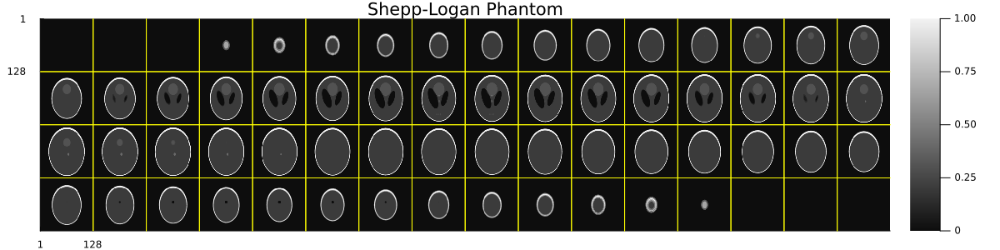
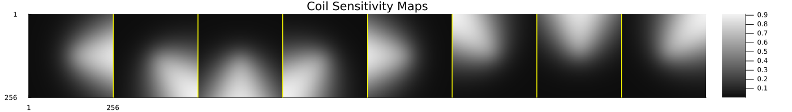
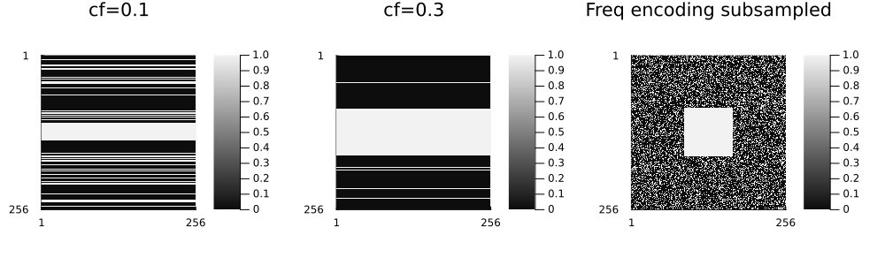
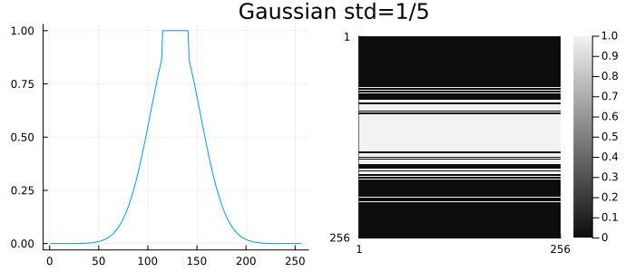
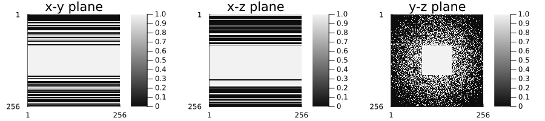

Simulation Tools
MriReconstructionToolbox provides comprehensive tools for simulating MRI acquisitions. These are essential for testing reconstruction algorithms, teaching MRI concepts, and prototyping new acquisition strategies.
Why Simulate?
Simulation is useful for:
- Testing reconstruction algorithms without needing real MRI data
- Understanding MRI physics through hands-on experimentation
- Prototyping new acquisition strategies before scanner implementation
- Teaching and learning MRI concepts interactively
- Benchmarking reconstruction methods with known ground truth
Overview: Complete Simulation Pipeline
A typical simulation workflow:
using MriReconstructionToolbox
# 1. Create a phantom (ground truth image)
img = shepp_logan(256, 256)
# 2. Generate coil sensitivity maps
smaps = coil_sensitivities(256, 256, 8)
# 3. Create a subsampling pattern
pdf = VariableDensitySampling(PolynomialDistribution(3), 3.0, 0.1)
pattern = create_sampling_pattern(pdf, (256, 256))
# 4. Simulate the acquisition
acq = AcquisitionInfo(is3D=false,
sensitivity_maps=smaps,
subsampling=pattern)
acq_with_data = simulate_acquisition(img, acq)
# 5. Reconstruct and compare
img_recon = reconstruct(acq_with_data, L1Wavelet2D(5e-3), verbose=false)Phantoms
Phantoms are synthetic images that serve as ground truth for testing.
Shepp-Logan Phantom
The classic test phantom for MRI reconstruction.
MriReconstructionToolbox.shepp_logan — Function
shepp_logan(nx::Int, ny::Int; oversample=3) -> Array{ComplexF32, 2}
shepp_logan(nx::Int, ny::Int, nz::Int; oversample=3) -> Array{ComplexF32, 3}Generate a Shepp-Logan phantom for MRI simulation and reconstruction testing.
The Shepp-Logan phantom is a standard test image widely used in medical imaging research, particularly for MRI and CT reconstruction algorithm validation. This implementation uses the Toft modification of the original Shepp-Logan phantom, which provides better contrast for modern reconstruction algorithms.
Arguments
nx::Int: Number of pixels/voxels in the x-dimensionny::Int: Number of pixels/voxels in the y-dimensionnz::Int: (3D only) Number of voxels in the z-dimension
Keywords
oversample::Int=3: Oversampling factor for anti-aliasing. Higher values produce smoother edges but take longer to compute. Default of 3 provides good quality for most applications.
Returns
- 2D: A
ComplexF32matrix of size(nx, ny)representing the phantom image - 3D: A
ComplexF32array of size(nx, ny, nz)representing the phantom volume
Details
2D Phantom
Uses the Toft modification of the classical Shepp-Logan phantom, consisting of 10 ellipses with varying intensities representing different tissue types in a head cross-section.
3D Phantom
Generates a 3D extension using ellipsoids with:
- Field-of-view (FOV): 24 cm × 24 cm × 20 cm
- Modified intensities (×10) for inner structures to improve visibility
- Toft's intensity modifications for the head (1.0) and skull/brain (-0.8) regions
References
- Shepp, L. A., & Logan, B. F. (1974). "The Fourier reconstruction of a head section." IEEE Transactions on Nuclear Science, 21(3), 21-43.
- Toft, P. (1996). "The Radon Transform - Theory and Implementation." PhD thesis, Technical University of Denmark.
See Also
simulate_acquisition: Generate k-space data from a phantomcoil_sensitivities: Generate sensitivity maps for multi-coil simulationAcquisitionInfo: Container for acquisition parameters
using MIRTjim: jim
# 2D Shepp-Logan
img = shepp_logan(256, 256) # Returns ComplexF32 array
# 3D Shepp-Logan
img_3d = shepp_logan(128, 128, 64)
jim(img_3d; title="Shepp-Logan Phantom", nrow=4, size=(1200,300))
Coil Sensitivity Maps
Sensitivity maps model the spatial response of receiver coils in parallel imaging.
MriReconstructionToolbox.coil_sensitivities — Function
coil_sensitivities(nx::Int, ny::Int, nc::Int) -> Array{ComplexF32, 3}
coil_sensitivities(nx::Int, ny::Int, nz::Int, nc::Int) -> Array{ComplexF32, 4}Generate simulated sensitivity maps for multi-coil MRI receivers.
Physics Background
In parallel MRI, multiple receiver coils are arranged around the imaging subject, each with spatially varying sensitivity profiles. This function simulates realistic coil sensitivity maps based on the physical principles of electromagnetic reception.
Physical Model
The sensitivity maps are constructed using:
Spatial Arrangement: Coils are positioned in a circular array around the field of view, with centers at angles
2π(i-1)/ncfor coili, mimicking typical clinical coil arrays.Magnitude Profile: Each coil's sensitivity decreases with distance from its center following a Gaussian profile
exp(-r²/(2σ²)), whereris the distance from the coil center. This reflects the physical reality that receiver coils are most sensitive to signal sources near them, with sensitivity falling off smoothly with distance.Phase Variation: A linear phase ramp
exp(im(0.5x + 0.3y))is applied to simulate phase variations due to:- B₀ field inhomogeneities
- Receiver electronics phase offsets
- Geometric positioning effects
Normalization: The maps are normalized using the root-sum-of-squares across all coils, ensuring that
√(Σᵢ|sᵢ(x,y)|²) ≈ 1at each spatial location. This preserves signal intensity while maintaining spatial encoding information.
Arguments
nx::Int: Number of pixels in x-directionny::Int: Number of pixels in y-directionnz::Int: Number of pixels in z-direction (for 3D sensitivities)nc::Int: Number of coils
Returns
Array{ComplexF32, 3}: Sensitivity maps of size (nx, ny, nc), where each slice along dimension 3 represents one coil's complex-valued sensitivity profile.
# Generate sensitivity maps for 8 coils
smaps = coil_sensitivities(256, 256, 8)
# 3D sensitivity maps
smaps_3d = coil_sensitivities(128, 128, 64, 8)
# Visualize 2D coil sensitivities
jim(smaps; title="Coil Sensitivity Maps", nrow=1, size=(1400, 200))
What you get:
- Smooth, realistic sensitivity patterns
- Each coil has higher sensitivity near its location
- Proper phase variations
- Returns ComplexF32 array with shape (nx, ny, [nz,] ncoils)
Subsampling Patterns
Subsampling patterns determine which k-space locations are measured.
Uniform Cartesian Sampling
MriReconstructionToolbox.UniformRandomSampling — Type
UniformRandomSampling(acceleration::Float64; center_fraction::Float64=0.1)Create a uniform random sampling pattern with the specified acceleration factor and center fraction. The acceleration parameter controls the overall undersampling factor, while the center_fraction parameter specifies the fraction of low-frequency k-space positions to be fully sampled.
Example: 2D Uniform Random Sampling
using Plots
# Center fraction = 0.1 (10% fully sampled center, default)
pdf = UniformRandomSampling(3.0)
pattern = create_sampling_pattern(pdf, (256, 256))
p1 = jim(to_displayable_mask(pattern, (256, 256)); title = "cf=0.1")
# Center fraction = 0.3 (30% fully sampled center)
pdf = UniformRandomSampling(3.0, 0.3)
pattern = create_sampling_pattern(pdf, (256, 256))
p2 = jim(to_displayable_mask(pattern, (256, 256)); title = "cf=0.3")
# 2D subsampling: freq encoding also subsampled (not realistic, for demo)
pdf = UniformRandomSampling(3.0)
pattern = create_sampling_pattern(pdf, (256, 256), subsample_freq_encoding=true)
p3 = jim(to_displayable_mask(pattern, (256, 256)); title = "Freq encoding subsampled")
jim(p1, p2, p3; layout = (1, 3), size = (1000, 300))
Example: 3D Uniform Random Sampling
pdf = UniformRandomSampling(4.0, 0.1)
pattern_3d = create_sampling_pattern(pdf, (128, 128, 64))
mask = zeros(Bool, 128, 128, 64)
mask[pattern_3d...] .= true
p1 = jim(mask[:, :, 32]; title="x-y plane")
p2 = jim(mask[:, 64, :]; title="x-z plane")
p3 = jim(mask[64, :, :]; title="y-z plane")
jim(p1, p2, p3; layout=(1,3), size=(1000,300))
Variable Density Sampling
The most common pattern for compressed sensing. There are many options for generating variable density patterns.
MriReconstructionToolbox.GaussianDistribution — Type
GaussianDistribution(std::Float64=1/3)Create a Gaussian variable density distribution with the specified standard deviation std. The sampling probability follows a Gaussian profile centered at k-space center: W(r) = exp(-0.5 * (r / std)^2), where r is the normalized distance from the k-space center.
MriReconstructionToolbox.PolynomialDistribution — Type
PolynomialDistribution(p::Float64=4)Create a Polynomial variable density distribution with the specified exponent p. The sampling probability is proportional to power of the distance from the k-space center: W(r) = (1 - r)^p, where r is the normalized distance from the k-space center.
MriReconstructionToolbox.VariableDensitySampling — Type
VariableDensitySampling(distribution::VariableDensityDistribution, acceleration::Float64; center_fraction::Float64=0.1)Create a variable density random sampling pattern based on the specified distribution, acceleration factor, and center fraction. The distribution parameter can be either GaussianDistribution or PolynomialDistribution. The acceleration parameter controls the overall undersampling factor, while the center_fraction parameter specifies the fraction of low-frequency k-space positions to be fully sampled.
Example: Different Variable Density Patterns in 2D
gaussian_pdf₁ = VariableDensitySampling(GaussianDistribution(1/3), 3.0)
gaussian_pattern₁ = create_sampling_pattern(gaussian_pdf₁, (256, 256))
W = MriReconstructionToolbox.construct_weights(gaussian_pdf₁, (256,))
p1 = plot(W; legend = false)
p2 = jim(to_displayable_mask(gaussian_pattern₁, (256, 256)))
jim(p1, p2; layout=(1,2), plot_title="Gaussian std=1/3", size = (700, 300))
gaussian_pdf₂ = VariableDensitySampling(GaussianDistribution(1/5), 3.0)
gaussian_pattern₂ = create_sampling_pattern(gaussian_pdf₂, (256, 256))
W = MriReconstructionToolbox.construct_weights(gaussian_pdf₂, (256,))
p1 = plot(W; legend = false)
p2 = jim(to_displayable_mask(gaussian_pattern₂, (256, 256)))
jim(p1, p2; layout=(1,2), plot_title="Gaussian std=1/5", size = (700, 300))
poly_pdf₁ = VariableDensitySampling(PolynomialDistribution(2), 3.0)
poly_pattern₁ = create_sampling_pattern(poly_pdf₁, (256, 256))
W = MriReconstructionToolbox.construct_weights(poly_pdf₁, (256,))
p1 = plot(W; legend = false)
p2 = jim(to_displayable_mask(poly_pattern₁, (256, 256)))
jim(p1, p2; layout=(1,2), plot_title="Polynomial p=2", size = (700, 300))
poly_pdf₂ = VariableDensitySampling(PolynomialDistribution(4), 3.0)
poly_pattern₂ = create_sampling_pattern(poly_pdf₂, (256, 256))
W = MriReconstructionToolbox.construct_weights(poly_pdf₂, (256,))
p1 = plot(W; legend = false)
p2 = jim(to_displayable_mask(poly_pattern₂, (256, 256)))
jim(p1, p2; layout=(1,2), plot_title="Polynomial p=4", size = (700, 300))
Example: Variable Density in 3D
poly_pdf = VariableDensitySampling(PolynomialDistribution(2), 3.0)
poly_pattern = create_sampling_pattern(poly_pdf, (256, 256, 256))
mask = zeros(Bool, 256, 256, 256)
mask[poly_pattern...] .= true
p1 = jim(mask[:, :, 128]; title="x-y plane")
p2 = jim(mask[:, 128, :]; title="x-z plane")
p3 = jim(mask[128, :, :]; title="y-z plane")
jim(p1, p2, p3; layout=(1,3), size=(900,200))
Poisson Disk Sampling
Spatially uniform but avoiding clustering.
MriReconstructionToolbox.PoissonDiskSampling — Type
PoissonDiskSampling(acceleration::Float64, center_fraction::Float64=0.1)Create a Poisson disk sampling pattern with the specified acceleration factor and center fraction. The acceleration parameter controls the overall undersampling factor, while the center_fraction parameter specifies the fraction of low-frequency k-space positions to be fully sampled.
pdf = PoissonDiskSampling(3.0)
pattern = create_sampling_pattern(pdf, (256, 256), subsample_freq_encoding=true)
jim(to_displayable_mask(pattern, (256, 256)); title="Poisson Disk Sampling", size = (300, 300))
Properties:
- Maintains minimum distance between samples
- More uniform coverage than random
- Good incoherence properties
Simulate Acquisition
MriReconstructionToolbox.simulate_acquisition — Function
simulate_acquisition(image, acq_info::AcquisitionInfo)Simulate MRI k-space acquisition from a given image using the specified acquisition parameters.
Arguments
image: The input image to be transformed into k-space data. Can be a standard array or aNamedDimsArray.acq_info::AcquisitionInfo: AnAcquisitionInfoobject containing acquisition parameters such as sensitivity maps, subsampling pattern, and whether the acquisition is 3D.
Returns
- An updated
AcquisitionInfoobject with the simulated k-space data stored in thekspace_datafield.
Advanced Simulation
Adding Noise
# Simulate acquisition
acq = simulate_acquisition(img_true, acq)
# Add Gaussian noise to k-space
noise_level = 0.01 # Adjust based on desired SNR
noise = noise_level * randn(ComplexF32, size(acq.kspace_data))
acq = AcquisitionInfo(acq; kspace_data=acq.kspace_data .+ noise)
# Reconstruct noisy data
img_recon = reconstruct(acq, L1Wavelet2D(5e-3))Custom Subsampling Patterns
# Manual pattern creation
mask = falses(256, 256)
# Fully sample center
mask[118:138, 118:138] .= true
# Random sampling elsewhere
for i in 1:256, j in 1:256
if !mask[i,j] && rand() < 0.2 # 20% sampling
mask[i,j] = true
end
end
# Use custom mask
acq = AcquisitionInfo(img, false; subsampling=mask)Cartesian Line Sampling
# Sample every 4th phase encoding line
ny = 256
lines_to_sample = [1:4:ny; div(ny,2)-10:div(ny,2)+10] # Skip plus center
mask = falses(256, 256)
mask[:, lines_to_sample] .= true
acq = AcquisitionInfo(img, false; subsampling=mask)